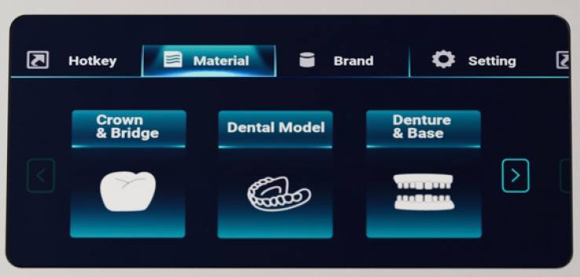
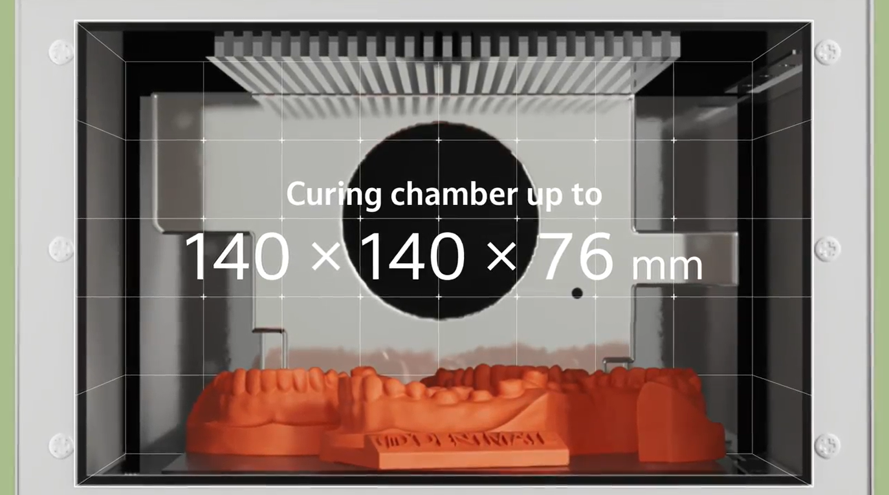

Project Introduction Video

A LED Curing Machine
During my internship at Dentmate Technology Co., LTD., I contributed across multiple stages of the device's development. My responsibilities included testing the hardware over several cycles and documenting issues using Notion's bug tracking boards. When our programmer was unavailable, Iindependently debugged and fixed firmware bugs in C, ensuring progress continued without delays. I also collaborated with another intern under my guidance to redesign the user interface with a more modern look, and personally translated the UI elements into English, Japanese, and Traditional Chinese by myself. In addition, I supported the hardware engineers by assisting with device disassembly during testing phases, which strengthened my understanding of the product’s design. Through these efforts, our team successfully delivered the device to clients for feedback, who expressed satisfaction with the results.



One of the main challenges I faced was interpreting vague or unclear bug reports submitted by coworkers. To overcame this, I communicated directly with the report authors whenever possible, and when that wasn't an option, I independently tested multiple device features to identify the issues. This experience taught me the importance of clear documentation, and I improved my own bug reports by including recorded videos to demonstrate problems when text or static images were insufficient. These practices strengthened both my collaborative skills and my expertise in quality assurance.